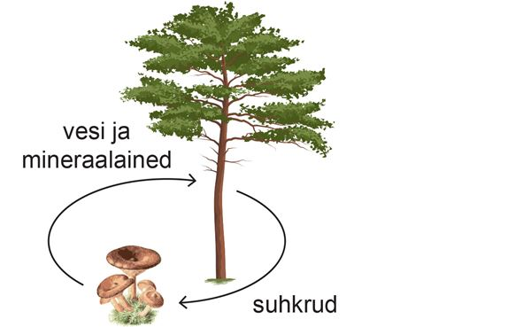

"Seene eluviis ja paigad"
Seened on lagundajad
Seened eraldavad keskkonda lagundavaid aineid.
Need ained lagundavad surnud taimede, loomade, aga ka teiste seente kehasid lihtsamateks ühenditeks.
Kooselu teiste organismidega
Sümbioos on kahe organismi kasulik kooselu.
Nii elavad sümbioosis näiteks mänd ja männiriisikas.
Männiriisikas aitab männil mullast kätte saada vett ja mineraalaineid. Männiriisikas saab männilt suhkruid.

Kui on rohkem küsimusi siis vajutage pealkirjale.